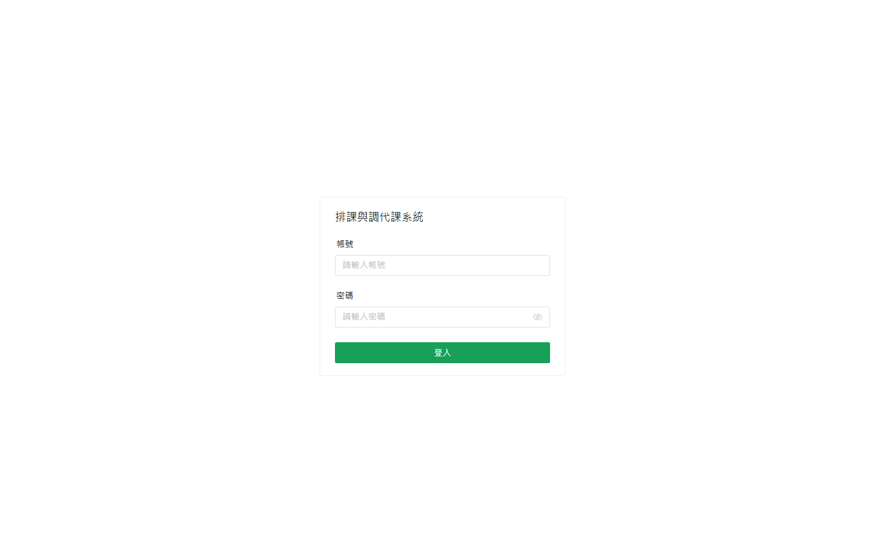
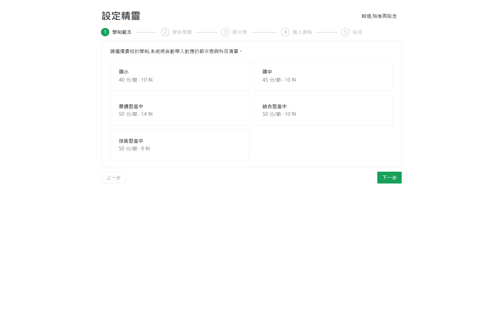
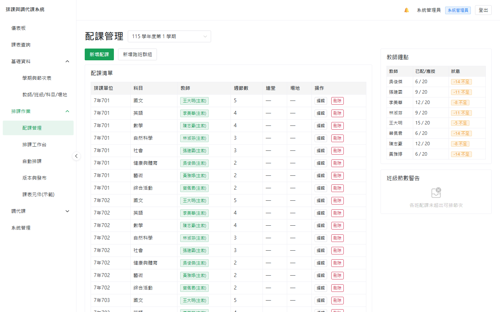
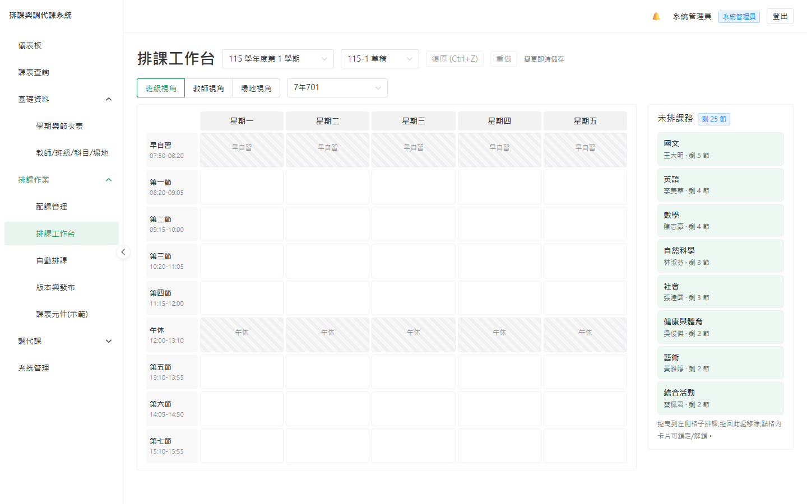
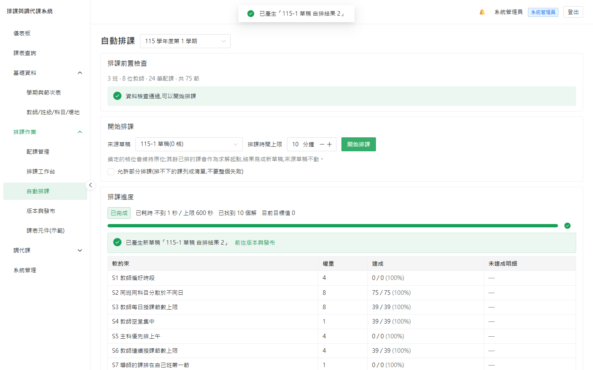
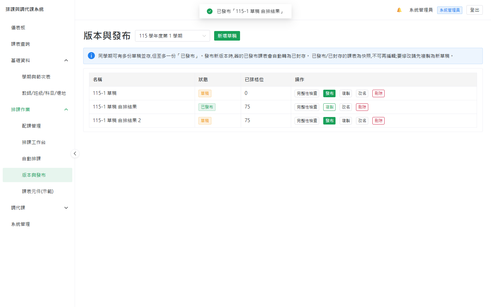
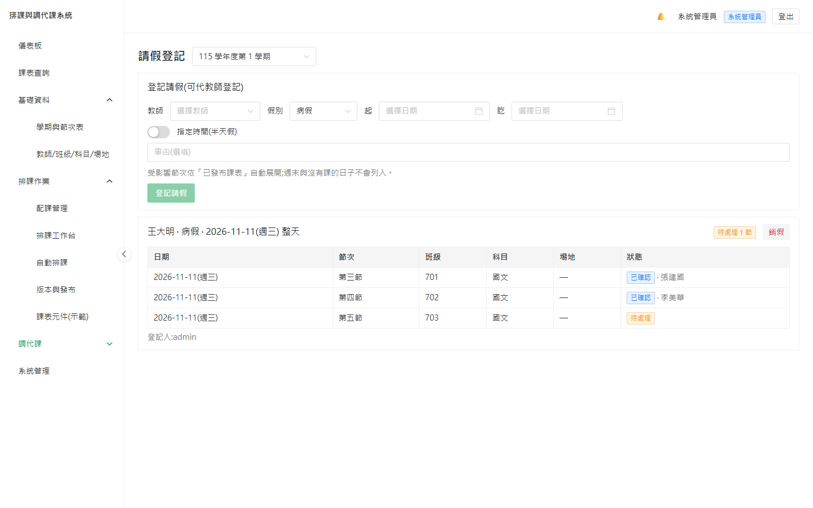
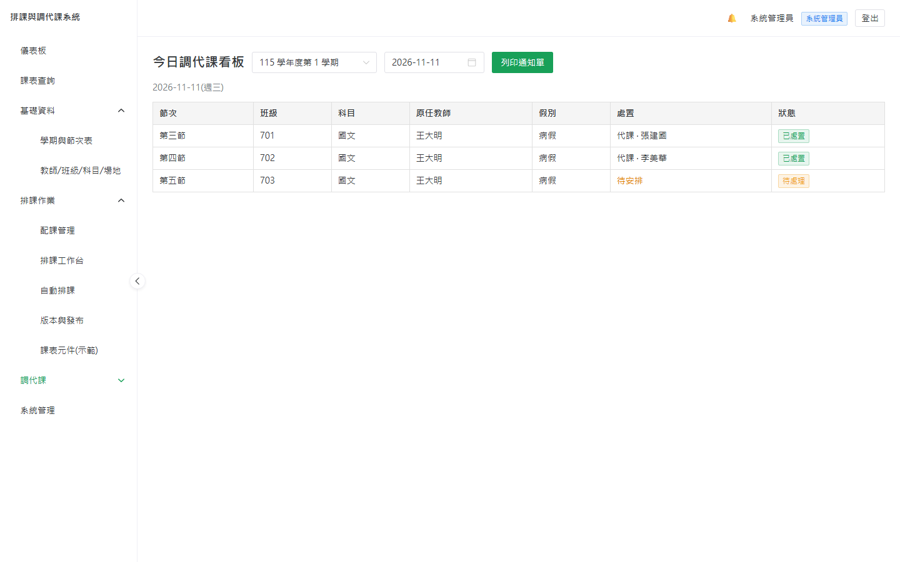
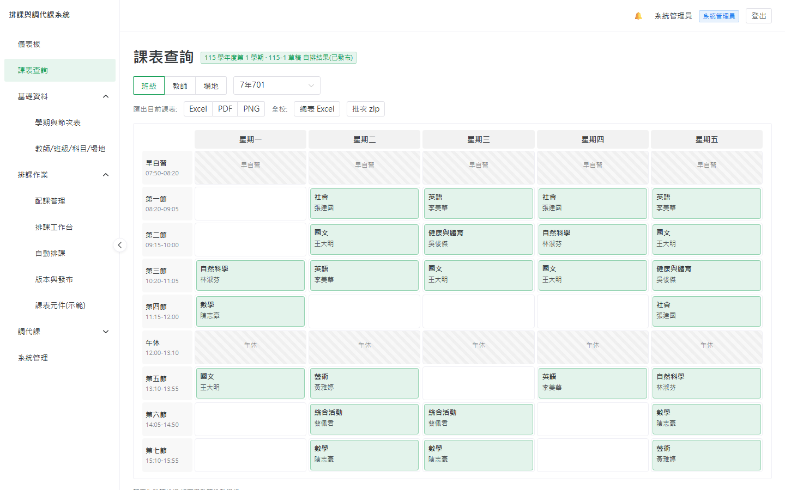
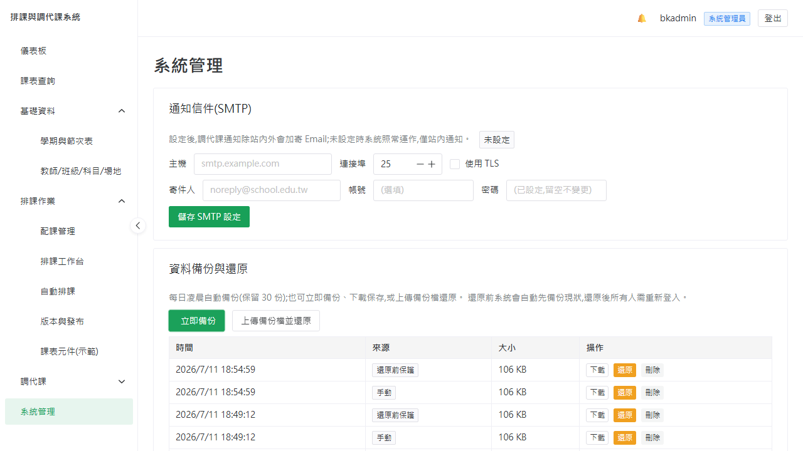

教學組長操作手冊
從零開始,帶你把一整個學期的排課與調代課工作,在這套系統裡走一遍。不需要程式背景,照著章節做,你就能獨立上手。
如何使用本手冊
這本手冊照著「一個學期的實際流程」編排:先把學校的基礎資料建好,再排課、發布,學期中再處理請假與調代課,最後匯出與備份。第一次使用建議從第 3 章「設定精靈」開始照做;之後遇到特定工作,再從左側目錄跳到對應章節。
系統裡的四種角色
登入後右上角會顯示你的角色。不同角色看得到的功能不同——本手冊主要寫給教學組長。
| 角色 | 負責什麼 | 看得到的頁面 |
|---|---|---|
| 系統管理員 | 安裝、帳號、備份還原、SMTP 等系統層設定 | 全部,含「系統管理」 |
| 教務主任 | 綜覽與審核,權限同組長 | 幾乎全部(除系統管理) |
| 教學組長 | 日常主力:基礎資料、配課、排課、調代課 | 基礎資料、排課作業、調代課 |
| 教師 | 查自己的課表、自己請假、確認代課通知 | 課表查詢、請假登記、我的代課鐘點 |
選單地圖
左側選單(教學組長視角)分成四大區。本手冊每一步驟都會用麵包屑標出位置,例如 排課作業›配課管理。
| 選單區 | 底下的頁面 |
|---|---|
| 基礎資料 | 學期與節次表 · 教師/班級/科目/場地 |
| 排課作業 | 配課管理 · 排課工作台 · 自動排課 · 版本與發布 · 課表元件(示範) |
| 調代課 | 請假登記 · 調代課處理 · 今日調代課 · 調代課紀錄 · 代課鐘點統計 · 通知確認看板 |
| 系統管理 | 備份還原 · SMTP · 重新啟動精靈(限系統管理員) |
提示=讓你更省力的小技巧;注意=容易忽略但重要;小心=做錯會有後果的操作;情境=模擬一個真實情況帶你操作。虛線框是截圖占位——手冊隨系統版本演進,截圖請在你自己的系統上擷取後補入。
這套系統能幫你做什麼
如果你現在用 Excel 手工排課、用紙本或 LINE 處理臨時調代課,這套系統要解決的正是那些最耗神、最容易出錯的環節。
它幫你收掉的三件苦差事
- 排課的衝突檢查——拖一格課,系統即時告訴你「王老師這節已經在 302 班有課」,不必自己用眼睛比對整張表。排不出來時,還會用人話說明是哪個條件卡住。
- 學期中的調代課全流程——老師請假,系統自動列出受影響的每一節、推薦當節有空又同科的代課老師、發通知給對方、月底自動結算代課鐘點。這通常是組長最零碎、最怕漏掉的工作。
- 課表的產出與保存——一鍵匯出各種格式的課表、全校總表、批次打包;每天自動備份,資料不怕不見。
為什麼選它,而不是繼續用現有做法
| 面向 | 這套系統 |
|---|---|
| 費用 | 完全免費、開源(MIT),沒有每人授權費、沒有訂閱費 |
| 資料隱私 | 單校自架,資料只留在學校自己的機器,不上任何雲端第三方 |
| 適用學制 | 國小、國中、普高、綜高、技高五種範本內建,連完全中學多套節次表都支援 |
| 語言與用語 | 全繁體中文,節次、配課、跑班、鐘點、調代課等台灣教務術語 |
| 排課引擎 | 內建自動排課(可處理連堂、跑班、協同教學、教師不可排時段等) |
不確定合不合用?你不需要真實資料就能試玩:用內建範本 + 少量假資料,10 分鐘就能跑完「排課 → 發布 → 請假 → 代課 → 月結」一整條流程,親眼看看順不順手。
開始前:準備哪些資料
正式建置前,先把下列清單準備好(電子檔最佳)。系統在「匯入資料」步驟提供 Excel 範本可下載,你把資料填進去上傳即可批次建立,不必一筆筆手打。
核心五份清單
| 清單 | 建議欄位 | 備註 |
|---|---|---|
| 教師 | 姓名、任教科目、基本鐘點數、行政減課、Email/手機/LINE | Email 供調代課通知;勾選可同時建立教師登入帳號 |
| 班級 | 年級、班名、學制、導師、(技高)群科 | 國小可指定導師 |
| 科目 | 科目名稱、(可選)是否主科 | 選範本時已帶入常見科目,可增修 |
| 場地 | 名稱、類型(一般/專科)、容量 | 如自然實驗室、體育館、實習工場 |
| 配課 | 班級、科目、任課教師、每週節數、(連堂)、(場地需求) | 這是排課的核心輸入,見第 4 章 |
選一個學制範本(科目與節次表會自動帶入),再手動加 3~5 位教師、2~3 個班級、幾筆配課,就足以體驗完整流程。真實全校資料等你決定採用後再匯入。
你選學制範本時,系統會自動帶入該學制的預設節次表(例如國小 40 分鐘、含週三下午不排課)。你只需要在精靈裡確認、微調,不必手工排每一節。
第一次設定(設定精靈)
全新系統第一次登入時,會自動進入五步驟設定精靈。每一步都可以「上一步」回去修改,也可以「略過,稍後再設定」。
登入與首次改密碼
- 開啟系統網址——本機是
http://localhost,校內其他電腦用主機的區網 IP(例如http://192.168.1.50)。 - 以管理員帳密登入——帳號密碼由安裝系統時的設定決定(見部署文件)。
- 依提示修改密碼——第一次登入會強制改一次密碼,改完才會進入系統。

精靈五步驟
- 學制範本——選擇貴校學制(國小/國中/普高/綜高/技高),系統自動帶入對應的節次表與科目清單。
- 學年學期——設定本學期的學年度與學期別(例如 115 學年度第 1 學期)。此步會實際建立學期。
- 節次表——已依範本帶好預設節次表。先確認即可;若要調整(如把週五第 7 節改成導師時間、或週三下午不排課),點「開啟節次表編輯器」。
- 匯入資料——下載 Excel 範本,填入教師、班級、科目後上傳,批次建立(可略過,稍後於「基礎資料」補建)。
- 完成——顯示已建立的資料摘要(科目、教師、班級、場地各幾筆),按「完成,前往基礎資料」。

中途關掉瀏覽器沒關係——下次登入會從上次的步驟接續。日後想重跑精靈,可到 系統管理 重新啟動。
配課管理
排課作業›配課管理
「配課」就是決定哪位老師、教哪個班、哪一科、每週幾節。這是排課的核心輸入——配課建好,才能開始排課。
建立一筆基本配課
- 選班級——例如 301 班。
- 選科目——例如國文。
- 指定任課教師——例如王老師。
- 填每週節數——例如 5 節。
- (選填)連堂與場地需求——如需 2 節連上,設定連堂;需要特定場地(如實驗室)可指定場地類型。

進階結構
| 情況 | 怎麼建 |
|---|---|
| 跑班群組(如高二多元選修,多班同時開多門) | 先把多個班級組成一個「群組」,再於群組內建立多筆配課;排課時整組同進同出 |
| 協同教學(一門課兩位老師一起上) | 同一筆配課裡加入多位教師(第一位為主教) |
| 連堂(如實習 3 節連上) | 在配課設定連堂長度與每週次數 |
頁面右側會即時顯示每位教師的「配課節數 vs 基本鐘點」。超鐘點會變紅字(如配 22 節、基本 20 → 顯示 +2),讓你當下就發現負擔不均。
若某班每週配課總節數超過可排的節次數,系統會警告(這班根本排不下)。跑班群組的成員班級若節次表不一致,建立會被擋下。
整學期配課很多時,用 Excel 批次匯入配課,比一筆筆點快得多。
手動排課工作台
排課作業›排課工作台
工作台是一張拖拉式週課表。左側是還沒排的課務清單(附剩餘節數),你把課拖進格子裡即可。適合微調,或想完全手動掌控時使用。
基本操作
- 從左側清單拖曳——把一筆未排課務拖進課表格子。
- 看即時衝突——可放的位置顯示綠框;有衝突顯示紅框,滑上去會浮出原因(用節次名稱說明,如「王老師 週一第一節 已有 302 班數學」)。
- 鎖定重要格位——不希望被更動的課,點鎖定圖示固定住。
- 移除——把格子裡的課拖回左側清單即取消。

好用的輔助
- 復原 / 重做——按 Ctrl+Z 可復原最近的操作。
- 三視角切換——同一份課表可用「班級 / 教師 / 場地」三種角度檢視,彼此即時同步(班級視角排的課,教師視角立刻看得到)。
- 自動儲存草稿——編輯過程會自動存,不必擔心忘記存檔。
手動排課適合「補幾節」或「照校內慣例微調」。想一次把整週排滿,直接用下一章的自動排課,再回工作台微調通常最省力。
自動排課
排課作業›自動排課
系統內建排課引擎,能在遵守各種硬性規則(教師/場地不衝突、連堂不跨午休、教師不可排時段…)下,自動排出一整週的課表。
操作流程
- 選擇學期與作為輸入的來源草稿。
- 看排課前置檢查——系統先做 pre-flight,確認資料合理(如沒有老師配課數超過可排格數)。通過會顯示「資料檢查通過,可以開始排課」。
- 設定排課時間上限(預設 10 分鐘)後,按「開始排課」。
- 觀察進度——畫面顯示已找到幾個解、目前目標值、經過時間。
- (可選)提前結束——找到解後可按「提前結束」,直接取當前最佳解。
- 取得結果——排好後產生一份新草稿「來源名 自排結果」,來源草稿不會被動到,排壞了隨時可丟。

排不出來怎麼辦?系統會說人話
如果條件互相矛盾排不出來,系統不會只丟一句「失敗」,而是做衝突定位,告訴你是哪幾件事湊在一起、鬆開哪一個就好,並附上具體數字與建議。例如:
報告顯示「301 班國文 12 節單節課,但每日上限 2 節 × 5 天 = 10 節」。你就知道:把每日上限放寬,或減少該科節數即可。系統還提供「一鍵照建議重試」。
勾選「允許部分排課」,系統會盡量排、把真的排不下的課列成「未排清單」告訴你是哪一班哪一科,而不是整個失敗。
發布課表與全校查詢
排課作業›版本與發布
你可以同時保留多份草稿互相比較。滿意哪一份,就把它「發布」——發布後全校師生就能查到這份課表。
發布流程
- 在版本清單找到要發布的草稿(可複製、改名、刪除來管理多份)。
- (建議)先按完整性檢查——若還有課沒排完,會列出警告清單。
- 按「發布」——若有未排完的課,會再問一次;確認後可強制發布。
- 舊版自動封存——發布新版後,同學期原本已發布的那份會轉為「已封存」。

發布後那份課表就固定下來,即使你之後改草稿也不影響它——這樣調代課才有穩定的依據。要更新,就發布新的一份。
全校查詢
課表查詢 是唯讀的查詢頁,可用班級 / 教師 / 場地三種角度查已發布課表,手機也能看。教師登入時,預設直接顯示本人課表。
學期中的調代課
這是學期開始後最日常、也最零碎的工作。系統把它拆成一條清楚的鏈:請假 → 找代課 → 通知 → 確認 → 看板 → 月結。
8.1 請假登記
調代課›請假登記
老師可以自己登記請假,教學組長也能代登。
- 選教師、假別(公假/事假/病假…)。
- 填請假起訖——可整天、半天、多天、跨週。
- 系統自動展開受影響節次——依已發布課表,列出這段期間他原本要上的每一節。跨週末只會展開上課日。
若要銷假,系統會級聯處理:已指派的代課老師會收到取消通知;已經上完的課不受影響(鐘點照算)。

8.2 調代課處理
調代課›調代課處理
對每一節受影響的課,選一種處置方式:
| 處置 | 意思 | 計鐘點? |
|---|---|---|
| 代課 | 找另一位老師代上 | 計 |
| 調課 | 兩位老師互換節次 | 計 |
| 併班 | 併到他班一起上 | 預設不計(可改) |
| 自習 | 學生自習 | 不計 |
| 不處理 | 當天停課/彈性運用 | 不計 |
選「代課」時,系統會列出推薦清單:優先「當節有空 + 同科目」,並附人話理由(如「同科目教師 · 當天已在校 · 本月已代 2 節」)。已排很滿的老師會自動排後面。
指派後立即生效——沒有「邀請/婉拒」流程(實務上組長多半已事先口頭徵得同意)。通知只是正式告知 + 請對方確認收到。若要撤回,退回待處理即可。
8.3 通知與確認
指派後,代課老師會收到站內通知(右上角鈴鐺,含未讀數),若有設定 SMTP 也會收到 Email。老師點開可一鍵「確認收到」。
你可在 調代課›通知確認看板 看到每一筆的確認狀態,對還沒確認的人一鍵「再次提醒」。
8.4 今日調代課看板
調代課›今日調代課(儀表板上也有)——一眼看到今天全部異動:誰代誰的課、教室有沒有變。可列印 A4 公告單(傳統公告格式)貼出來或發群組。

8.5 調代課紀錄
調代課›調代課紀錄——歷史查詢,可依教師、日期、假別篩選。查一位老師時,他「缺的課」和他「代的課」都會出現。
8.6 代課鐘點統計
調代課›代課鐘點統計——月結報表,依教師彙總代課節數與計費節數(併班/自習不計費),可匯出 Excel。跨月的假單會自動依每一節的日期分月計算。教師本人也能查自己的明細。
① 到「請假登記」幫他登病假(今天整天)→ 系統列出他今天 4 節課。② 到「調代課處理」逐節選代課,從推薦清單各挑一位有空同科的老師。③ 對方收到通知、確認收到。④ 到「今日調代課」列印公告單。⑤ 月底「代課鐘點統計」自動把這幾節算進代課老師的鐘點。全程不到幾分鐘。
匯出課表
已發布的課表可從 課表查詢 頁的匯出按鈕輸出成多種格式。
| 要什麼 | 怎麼拿 |
|---|---|
| 單一班級/教師/場地課表 | Excel、PDF、PNG 三選一(PDF 內嵌中文字型,不會亂碼) |
| 全校總表 | 一個 Excel,每班一個分頁 |
| 全部班級一次拿 | 批次匯出,打包成一個 zip |
單一課表所有登入者都能匯出(課表本就全校可查);全校總表與批次打包限教學組長以上。檔名為中文,直接就能歸檔。

系統管理
系統管理(限系統管理員)
資料備份與還原
- 每日自動備份——系統每天凌晨自動備份,預設保留最新 30 份、自動輪替。
- 立即備份——重大操作(升級、大量匯入、換學期)前,建議先按一次。
- 下載 / 上傳還原——可下載備份檔異地保存;換主機或救援時上傳還原。
- 還原的安全網——還原前系統會自動先備份現狀(可反悔),還原完成後強制所有人重新登入。
還原會覆蓋目前所有資料。務必確認選對備份檔。所幸有「還原前保護」這道自動備份墊底,誤操作仍可救回。
備份檔存在同一台主機。硬碟壞掉就一起沒了。請定期把備份檔下載到另一台電腦或雲端硬碟(詳見部署文件的「備份與還原」)。

Email 通知(SMTP,選填)
填入學校的 SMTP 主機資訊,調代課通知才會寄 Email。沒設定也沒關係——系統照常運作,只是僅有站內鈴鐺通知。可按「寄測試信」當場驗證。
開新學期複製精靈
新學期不必從零建。可從既有學期複製教師/班級/科目/場地/節次表,班級年級自動 +1(可關閉),畢業年級提示移除。兩學期資料獨立,改一邊不影響另一邊。
常見情境 FAQ
Q. 自動排課排不出來,怎麼辦?
看系統給的衝突定位報告——它會指出是哪個條件卡住、附上數字與建議。依建議放寬條件(如某科每日上限、教師不可排時段),或用「部分排課」先排大部分、再手動補未排的幾節。
Q. 老師早上臨時請假,最快的處理流程?
請假登記(當天整天)→ 調代課處理(逐節從推薦清單選代課)→ 對方收到通知確認 → 今日看板列印公告。見第 8 章情境框。
Q. 我們是完全中學,國中部高中部作息不同?
系統支援同學期多套節次表。在有兩套以上節次表時,班級表單會出現「節次表」下拉,把不同部的班級指到對應的節次表即可(多數學校全校統一,則完全看不到這個欄位,零負擔)。
Q. 忘記密碼了?
初始密碼由安裝設定決定;登入後改過的密碼存在資料庫。若都忘了,最務實的是還原一份記得密碼的舊備份,或請系統管理員協助。請妥善保管管理員密碼。
Q. 老師收不到 Email 通知?
Email 是選填功能。若「系統管理」沒設定 SMTP,就只有站內鈴鐺通知,這是正常的。要寄 Email 需填學校 SMTP 並可寄測試信驗證。
Q. 資料會不會不見?
資料存在學校自己的主機。系統每天自動備份、保留 30 份。但請務必做異地備援(把備份檔下載到別處),主機硬碟壞掉時才救得回。
Q. 換到下學期,要重新建一次全部資料嗎?
不用。用「開新學期複製精靈」從上學期複製,年級自動進位,再微調即可。
還有問題? 系統的安裝、升級、備份策略、網域 HTTPS 等「部署維運」細節,見專案的 docs/deploy/ 六篇部署文件;操作上的疑難,歡迎到專案 GitHub Issue 回報。
回報錯誤或提供建議,也歡迎直接來信:
專案開發者 國立南大附中 李佳恩老師 · begin0808@gmail.com
這套系統是為第一線教學組長而寫的,你的實際使用回饋對它的改進最有幫助。
排課與調代課系統 · 教學組長操作手冊 · v1.0 · 開源免費(MIT)· 單校自架
本手冊隨系統版本更新;虛線截圖占位請於你自己的系統擷取後補入。